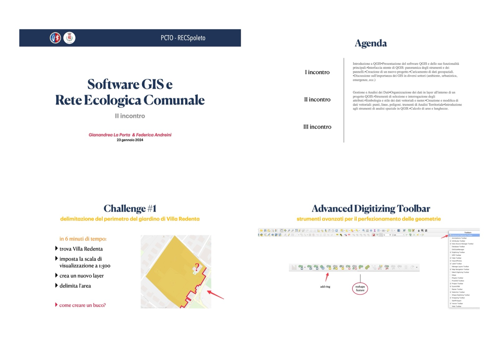
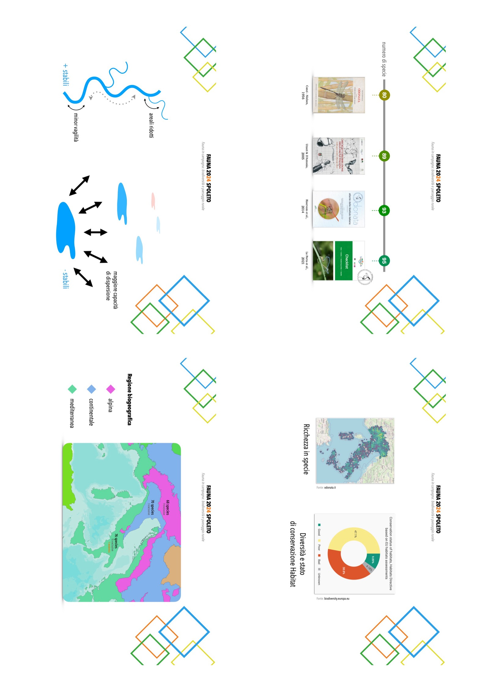
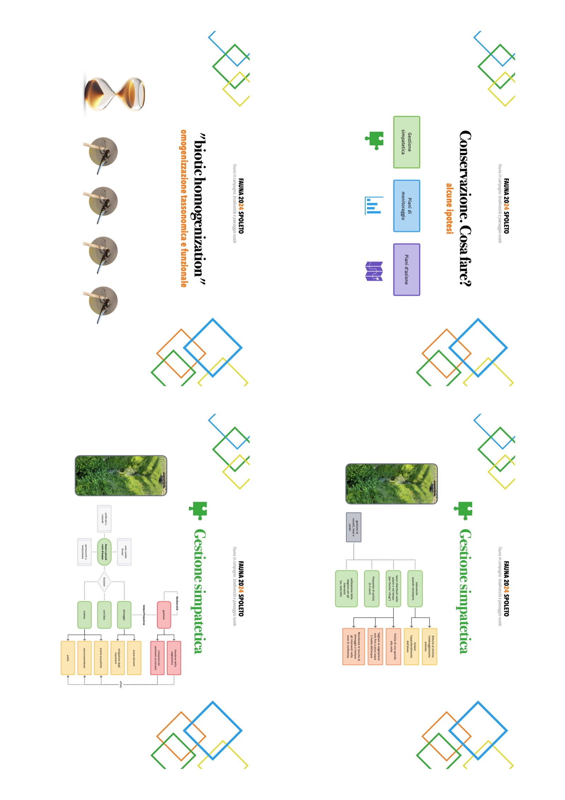

- 1 Premessa
- 2 Introduzione
- 3 Metodologie
- 4 Risultati
- 5 Disseminazione dei risultati
- 6 Considerazioni conclusive
- 7 Programmazione 2025
- 8 Allegato I
- 8.1 Layout diapositive
- 8.1.1 Attività PCTO (Percorsi per le Competenze Trasversali e l’Orientamento) su biodiversità e reti ecologiche
- 8.1.2 Incontro pubblico: Diventare un citizen scientist monitoraggio della fauna minore
- 8.1.3 Convegno Fauna 2024 con contributo dal titolo: La conservazione delle libellule nelle campagne
- 8.1.4 Convegno Fauna 2025 con contributo dal titolo: Fauna e Reti ecologiche: progettare connessioni per la biodiversità
- 8.1 Layout diapositive
- Riferimenti bibliografici
Capitolo 8 Allegato I
8.1 Layout diapositive
A seguire le slide delle presentazioni utilizzate durante gli eventi di disseminazione dei risultati della ricerca raggruppate per attività.
8.1.1 Attività PCTO (Percorsi per le Competenze Trasversali e l’Orientamento) su biodiversità e reti ecologiche





8.1.2 Incontro pubblico: Diventare un citizen scientist monitoraggio della fauna minore


8.1.3 Convegno Fauna 2024 con contributo dal titolo: La conservazione delle libellule nelle campagne




8.1.4 Convegno Fauna 2025 con contributo dal titolo: Fauna e Reti ecologiche: progettare connessioni per la biodiversità